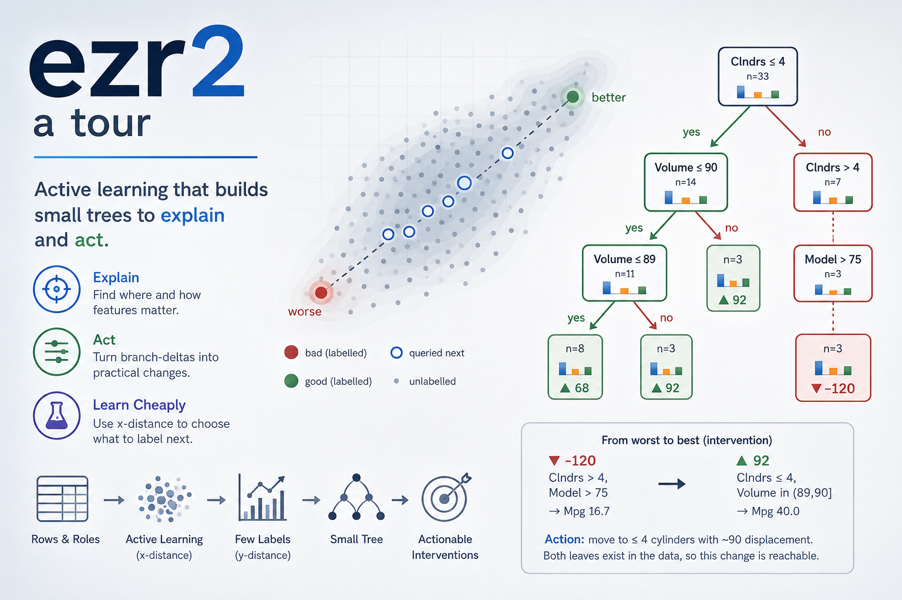

ezr2: a tour
Tim Menzies timm@ieee.org · timm.fyi · 2026-06-26 · tiny.cc/ezr2
A textbook in genetic-stanza form. Read top-to-bottom: each concept
appears in build order, atoms first, call sites last. Numbered traces
([1]>) are a live python3 -i ezr2.py
session; outputs are verbatim.
Install. Grab the library, its tests, and some sample data, then run:
wget -O ezr2.py http://tiny.cc/ezr2#file-ezr2-py
wget -O test_ezr2.py http://tiny.cc/ezr2#file-test_ezr2-py
wget -O auto93.csv http://tiny.cc/optimiz#file-misc_auto93-csv
python3 test_ezr2.py --file=auto93.csv distyMore sample CSVs live in the sibling data gist tiny.cc/optimiz
(optimization tasks).
AUTHOR-CONFIG
audience: Python dev, new to active learning
assumed: recursion, dicts, basic stats
language: Python 3
depth: terse
tone: K&R
prose: 65 cols code: fenced repl: [1]>How can we build — quickly and cheaply — models that explain themselves, and explain themselves usefully?
By useful we mean three things. First, an explanation should
say not just which feature matters but where:
age < 20, not “age”. Second, it should show
interactions — how age < 20 shifts meaning
inside another context. Third, it should suggest an
intervention: not “what scored well” but “what to
change to do better” (Pearl’s ladder, rung two1 —
though we only ever propose changes already seen in the data,
never claim proven cause). A small tree gives all three at once: each
branch is a where (age < 20), its nesting is
the interaction, and the delta between two leaves is the
change. The rest of this tour is how to grow that tree from
very few labels.
Two rows show the goal. disty is a row’s distance to the
ideal goals (0 = best); it is the only thing we pay to measure
— everything else is free arithmetic over the cheap x-columns.
Clndrs Volume ... Lbs- Acc+ Mpg+ disty
4 90 ... 1985 21.5 40 0.075 <- good
8 455 ... 4425 10 10 0.954 <- badLight, high-Mpg cars sit near 0; heavy guzzlers near 1. The whole
game: reach the 0.075-rows while reading disty for as few
rows as possible (a few dozen labels get there), then grow a small tree
that says why — and what to change. Then validate what we
learned: check that tree against held-out data.
Here is that tree (grown later from ~40 labels, depth-trimmed for this preview). Read it top-down:
win n Lbs- Acc+ Mpg+
-6 40 2546.85 16.47 30.00
11 33 2325.52 16.49 32.42 Clndrs <= 4
43 14 2036.43 17.45 35.71 | Volume <= 90
▲ 92 3 2135.00 22.30 40.00 | | Volume > 89
30 11 2009.55 16.13 34.55 | | Volume <= 89
-12 19 2538.53 15.78 30.00 | Volume > 90
-92 7 3590.29 16.36 18.57 Clndrs > 4
-71 4 3485.50 18.00 20.00 | Model <= 75
▼-120 3 3730.00 14.17 16.67 | Model > 75Light 4-cylinder cars (▲) reach Mpg 40; heavy 8-cylinder
ones (▼) bottom out at 16.7. Each branch is a
where (Clndrs <= 4), the nesting is the
interaction (Volume matters differently under each
Clndrs), and the delta between the ▲ and
▼ leaves is the action.
Now ask yourself. Your boss wants to put you in a six-cylinder car —
the ▼ branch, poor acceleration and poor mileage. What is
the least change you need to negotiate for a better car? Walk
the tree: the nearest good leaf is
Clndrs <= 4, Volume <= 90 — the ▲ leaf,
Mpg 40. So you ask for the ~90cc four-cylinder. All of it is inferred by
showing your boss the tree and tracing the one branch that moves you:
fast comprehension, fast discussion, effective decisions. The rest of
the tour earns this picture.
Atoms: Num and Sym
A Num is a 3-tuple (n, mu, m2) — count,
running mean, and sum of squared deviations. A Sym is just
a dict of value counts. Two summaries, one numeric, one
symbolic.
Sym = dict
def Num(n=0, mu=0, m2=0): return (n, mu, m2)welford folds one value into a Num in a single pass;
sd reads a standard deviation back out of m2.
No stored list.
def welford(v, n, mu, m2):
n += 1; d = v - mu; mu += d / n
return (n, mu, m2 + d * (v - mu))adds folds a stream into a Num. add
dispatches on type: Num via welford, Sym via a count bump.
[1]> Num()
(0, 0, 0)
[2]> c = adds([2,4,4,4,5,5,7,9]); c
(8, 5.0, 32.0)
[3]> round(mu_(c),2), round(sd(c),2)
(5.0, 2.14)Two sibling pairs read a summary back, each dispatching on type:
mid (mean | mode) and var (sd | entropy).
adds seeds either kind — pass an empty accumulator and it
is kept (i = Num() if i is None else i, so a falsy
{} survives).
[4]> s = adds("aabbbc", Sym()); s
{'a': 2, 'b': 3, 'c': 1}
[5]> mid(s), round(var(s), 2)
('b', 1.46)Data: rows and roles
Data reads a CSV. The first row is column names; their
suffixes assign roles. Upper = Num, lower =
Sym. A goal ends + (maximize), - (minimize),
or ! (klass). X skips; ~ marks a
sensitive column.
def roles(data):
for at, s in enumerate(data.names):
data.cols[at] = Num() if s[0].isupper() else Sym()
if s[-1] == "X": continue
if s[-1] in "+-!":
data.y += [at]; data.goal[at] = s[-1] == "+"
if s[-1] == "!": data.klass = at
else:
data.x += [at]
if s[-1] == "~": data.protect += [at]
return dataSo x are predictors, y are goals.
goal[at] is True when bigger is better.
[6]> d = Data(csv(the.file))
len(d.rows), d.names[:3]
(398, ['Clndrs', 'Volume', 'HpX'])
[7]> d.x[:4]
[0, 1, 3, 4]
[8]> d.y, [d.names[a] for a in d.y]
([5, 6, 7], ['Lbs-', 'Acc+', 'Mpg+'])
[9]> d.rows[0]
[8, 304, 193, 70, 1, 4732, 18.5, 10]Distance: y-space and x-space
disty is the label: how far a row sits
from the ideal goals, 0 = best. Each goal is normalized to 0..1,
compared to its goal direction, then aggregated by a
p-norm. The labelled hook is where a real evaluator would
fill the row.
def disty(data, row, **kw):
row = labelled(row)
return minkowski(
(abs(norm(data.cols[at], row[at]) - data.goal[at])
for at in data.y if row[at] != "?"), **kw)[10]> round(disty(d, d.rows[0]), 3)
0.786
[11]> best = min(d.rows, key=lambda r: disty(d,r))
round(disty(d,best),3), best[:5]
(0.075, [4, 90, 48, 78, 2])Labels are the cost. In the real world a label means running the experiment, the benchmark, the survey — slow and dear. So active learning2 reflects on what it has seen to choose what to label next, learning only from the rows that seem to matter and ignoring noisy, redundant ones. Done well, surprisingly few labels suffice.
The disty test sorts every row by its label and shows
the extremes — the good rows we are hunting, and the bad we are
fleeing:
[12]> # python3 test_ezr2.py disty
Clndrs Volume HpX Model origin Lbs- Acc+ Mpg+ disty
4 90 48 78 2 1985 21.5 40 0.075
4 90 48 80 2 2085 21.7 40 0.087
4 85 65 81 3 1975 19.4 40 0.087
8 455 225 73 1 4951 11 10 0.956distx is disty’s sibling over the x-columns
— free to compute, no goals consulted. Active learning leans on this:
cluster in x-space, spend labels sparingly in y-space.
[13]> round(distx(d, d.rows[0], best), 3)
0.785Active learning: landscape
landscape is a descendant of SWAY3,
and it leans on one helper, project. Given a set of
already-labelled rows, project finds two
distant poles — east (the y-better one) and
west — then returns a function placing any row on the
east-west line between them, using only the cheap x-distance. Low score
= near the good pole.
def project(rows, x, y):
far = lambda r: max(rows, key=lambda z: x(z, r))
east = far(rows[0]); west = far(east)
if y(east) < y(west): east, west = west, east
c = x(east, west) + TINY
return lambda r: (x(east,r)**2 + c*c - x(west,r)**2) / (2*c)landscape then labels grow rows per round,
sorts the pool by project, keeps the promising fraction
nearest the good pole, and repeats until the budget
(budget-check) is spent.
def landscape(data):
x = lambda a,b: distx(data, a, b)
y = lambda r: disty(data, r)
cap = the.budget - the.check
pool = shuffle(data.rows)
lab = {}
while len(lab) < cap and len(pool) >= 2*the.leaf:
here, k = [], 0
for r in pool:
if id(r) in lab: here.append(r)
elif k < the.grow and len(lab) < cap:
lab[id(r)] = r; here.append(r); k += 1
n = max(1, int((1-the.keepf)*len(pool)))
pool = sorted(pool, key=project(here, x, y))[n:]
return sorted(lab.values(), key=y)lab is keyed on id(row) (rows are mutable
lists, so unhashable); its length is the budget.
wins grades a row: % of the gap from median to best that it
closes.
[14]> got = landscape(d)
len(got), round(disty(d,got[0]),3)
(40, 0.075)
[15]> round(wins(d)(got[0]), 1)
10040 labels reach the best disty in the whole dataset — the entire median-to-best gap closed.
Trees: score, cuts, tree, show
A cut splits rows to minimize score — the size-weighted
mean of var on each side (so sd for numeric
goals, entropy for symbolic). cuts only yields
splits leaving leaf rows on both sides;
the size guard lives here, in the selector, so a degenerate one-row cut
never wins min.
def score(here, there):
a, b = size(here), size(there)
return (var(here)*a + var(there)*b) / (a + b + 1e-32)
def cuts(data,rows,at,Y,accum=Num):
xy = [(r[at], Y(r)) for r in rows if r[at] != "?"]
n = len(xy)
tot = adds((y for _,y in xy), accum())
cut = lambda here,k: (score(here, mix(tot,here,-1)),at,k)
big = lambda lo: the.leaf <= lo <= n-the.leaf
...The far side is tot - here via mix(...,-1)
— one running accumulator, no re-scan. accum is the goal’s
type: Num for a regression tree (the default, with
Y=disty), Sym for a classification tree (with
Y returning a class label).
tree recurses on the lowest-cost cut. has
routes a row (? goes yes-side); if yes and no
guards the one case the selector can’t — a ?-heavy column
emptying a side. Each node keeps mid — the mean of a Num
goal, the mode of a Sym one.
def tree(data, rows, Y=None, accum=Num, lvl=0):
Y = Y or (lambda r: disty(data, r))
t = o(at=None, mid=mid(adds((Y(r) for r in rows),accum())),
n=len(rows), rows=rows)
if len(rows) >= 2*the.leaf and lvl < the.maxd:
if cut := min((c for at in data.x
for c in cuts(data,rows,at,Y,accum)),
default=0):
_, at, v = cut
col = data.cols[at]
yes, no = [], []
for r in rows:
(yes if has(r,col,at,v) else no).append(r)
if yes and no:
t.at, t.v = at, v
t.yes = tree(data, yes, Y, accum, lvl+1)
t.no = tree(data, no, Y, accum, lvl+1)
return tshow prints it: a win column, leaf size
n, the goal means, then the branch tests.
▲/▼ flag the best/worst leaf; subtrees sort
best-first.
[16]> t = tree(d, landscape(d)); show(d, t)
win n Lbs- Acc+ Mpg+
-6 40 2546.850 16.468 30.000
11 33 2325.515 16.491 32.424 Clndrs <= 4
43 14 2036.429 17.450 35.714 | Volume <= 90
▲ 92 3 2135.000 22.300 40.000 | | Volume > 89
...
-92 7 3590.286 16.357 18.571 Clndrs > 4
▼-120 3 3730.000 14.167 16.667 | Model > 75Light 4-cylinder cars sit at the good (▲) leaf — Mpg 40,
fast 0–60; the heavy 8-cylinder ▼ leaf bottoms out at Mpg
16.7.
The same machinery builds a classification
tree: pass a class-label Y and accum=Sym. Now
score reads entropy and each node’s mid is the
majority class.
[17]> klass = lambda r: "good" if disty(d,r)<0.4 else "bad"
ct = tree(d, landscape(d), klass, Sym)
ct.mid, d.names[ct.at]
('bad', 'Volume')The payoff: branches are actions
Because we labelled only a few dozen rows, the tree above is small enough to read — and that is the point. Any row follows one short root-to-leaf path, and each leaf is a real cluster that actually occurred in the data.
That makes the tree a guide, not just a report. Read the
worst and best leaves of [16] straight off the page:
▼ -120 Clndrs > 4, Model > 75 -> Mpg 16.7 (you are here)
▲ 92 Clndrs <= 4, Volume in (89,90] -> Mpg 40.0 (you want here)The delta between those two branch tests is your
action: move to <= 4 cylinders with a ~90
displacement. Because both leaves exist in the data, that change is
known to be reachable here — not an invented recommendation.
This is the “intervention” promised up front: cheap to learn (a few
labels), honest to act on (observed clusters only).
A big dataset grows a bushier tree, but the idea is unchanged — you still walk one short path, and a branch-delta is still the action.
The budget rig: holdout
landscape searches all the data. holdout is
the honest generalization test: split 50:50, landscape on the
train half only, build a tree on those ~45 rows, then use it to
rank the unseen test half and label the top check.
def holdout(data):
rows = shuffle(data.rows)
half = len(rows)//2
train, test = rows[:half], rows[half:]
got = landscape(clone(data, train))
t = tree(data, got)
top = sorted(test,
key=lambda r: leaf(data,t,r))[:the.check]
return min(top, key=lambda r: disty(data,r))[18]> best = holdout(Data(csv(the.file)))
round(disty(d,best),3), round(wins(d)(best),1)
(0.16, 81.6)The check knob is at-k trust. A real
deployment shows a human a short list and they pick one; we grade the
same way — is a good row in the model’s top check?
(hit@k / top-k accuracy4, from information retrieval).
check=1 means “trust the model, apply its top pick”; larger
check means “I am less sure — let me see a few.” Often we
are checking a model some other team built on other
data, and check is the dial for how far we lean on it.
Plumbing
thing coerces a CSV cell to int/float/bool/str.
csv yields rows as lists (so
labelled can mutate them). settings parses the
module docstring’s --key ... = val lines into
the — the options table is the config, no
duplicate defaults to drift.
def settings(doc):
pat = r"--(\w+)\s+[^=\n]*=\s*(\S+)"
return o(**{k: thing(v)
for k,v in re.findall(pat, doc)})
the = settings(__doc__)main lives in the library but the test_*
functions live in test_ezr2.py
(from ezr2 import *, then main(globals())). So
the library has no tests inside it; the test file is the runnable entry
point. Tests are bare names on the command line:
$ python3 test_ezr2.py landscapes --budget=80
$ python3 test_ezr2.py tree
$ pytest test_ezr2.pyWant a live model instead of a CSV? Override labelled to
compute goals on demand — dtlz.py drives ezr2 over the
DTLZ1–7 benchmarks5.
That is the whole arc: cheap x-distance to steer, expensive y-distance to label, a tree to explain, a budget to keep everyone honest — and branch-deltas to act on.
References
J. Pearl, The Seven Tools of Causal Inference, with Reflections on Machine Learning, CACM 2019. PDF: https://ftp.cs.ucla.edu/pub/stat_ser/r481.pdf↩︎
B. Settles, Active Learning Literature Survey, 2012. PDF: https://burrsettles.com/pub/settles.activelearning.pdf↩︎
J. Chen, V. Nair, R. Krishna, T. Menzies, “Sampling” as a Baseline Optimizer for Search-Based Software Engineering, TSE 2018. PDF: https://arxiv.org/pdf/1608.07617↩︎
C. Manning, P. Raghavan, H. Schütze, Introduction to Information Retrieval (precision@k / hit@k), 2008. PDF: https://nlp.stanford.edu/IR-book/pdf/irbookonlinereading.pdf↩︎
K. Deb, L. Thiele, M. Laumanns, E. Zitzler, Scalable Test Problems for Evolutionary Multiobjective Optimization, 2005. PDF: https://sop.tik.ee.ethz.ch/publicationListFiles/dtlz2005a.pdf↩︎
150 words of css
designed.2.last